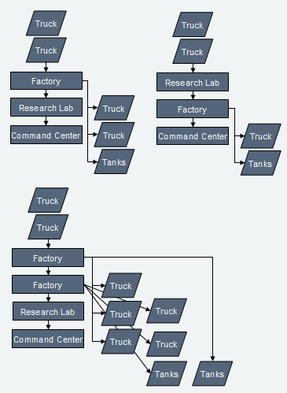

- Use your power. If your power rises above 500 in the early or mid-game, spend more of it! Research something, build some more research facilities, build a bigger army, defend your oil derricks... something!
- Never stop researching. If you stop, you will be more and more disadvantaged as time goes on, in every area.
- Get more derricks. Everything requires power! The more you have of it, the better. It's nearly impossible to win with only the four derricks in your base.
- Many players build a Factory first (or at least second). Factories produce additional trucks, which makes building the rest of the base much faster.
- Research Facilities are also important. Unlike other games, Warzone starts with zero weapons researched, so Machinegun must be researched before you have any offensive capability at all. Without a research facility, you can't do anything but make trucks and base structures.
- Command Centers are also required for most normal play - they are a prerequisite for any defensive structure research, and are required to design tanks.
- Without a Power Generator, your initial supply of power will quickly run out. Start on those oil derricks as well.
As you are building up your base, you should send trucks out to capture oil resources around the map, as well as scouting for enemy activity. The four oil resources inside your base (on a standard map) will soon be insufficient, and you need to claim more to have a chance of staying in the game.
While you are exploring, you should start making Machinegun tanks or cyborgs to help defend your trucks.
Some possible orders to build your structures:

In Warzone, without research, a player simply cannot survive in a game for very long. Every research is one more advantage you have against your opponent. It's an advantage that costs no money after it has been researched. It's an advantage that, unlike armies and structures, cannot be taken from you.
There's no need to worry about memorizing the research tree, of course. It may seem intimidating, but a player needs to know very little of it, and will quickly pick up what to research while playing the game.
There are different strategies about which to research first. Remember that the purpose of research is to gain an advantage on your opponent. But which advantage should you gain first? Offensive capability? Defensive capability? Economy?
The first weapon you get in Warzone is the Machinegun. So if you want to tank rush as early as possible, the Machinegun is the only choice. However, if you have time to research a bit first, there are four viable early-game weapons:
- Twin Machinegun
- Light Cannon
- Flamer
- Mini-Rocket Pod
These all cost approximately $100 to research, total, and will take two to three minutes to research. The Mini-Rocket Pod costs slightly, but not noticeably, more than the others.
![Twin Machinegun]()
Getting the Twin Machinegun and going down the machinegun route will give you an early-game advantage. It's a generalist weapon, and you'll soon get the Heavy Machinegun. Many games can be won simply by focusing on this weapon.
Some players like to neglect research after getting the Heavy Machinegun; simply amassing these tanks and rushing the enemy. Note, however, that even at this stage, massed Heavy Machineguns are still vulnerable to massed Mini-Rocket Pod tanks and towers, and that if the rush fails, you will be at a very significant research disadvantage.
![Light Cannon]()
The Light Cannon is the start of the cannon tree. While the Medium and Heavy cannons don't show up as early as the Heavy Machinegun, they easily outclass it. Cannons are slower, heavier, more expensive, and have more HP than machineguns. They do more damage to armored tanks and armored structures, but less damage to cyborgs.
While Light Cannons can be used similarly to machineguns, the weight of the more powerful cannons slows them down enough that you must plan for this liability. Users of longer-ranged weapons, such as Lancers, can easily outrun you, and harass you from afar. In situations like this, seek to corner them where they cannot escape. If you are in open space, it may be best to ignore them, and continue on to your enemy's base, instead of wasting time chasing them, which will be a losing battle.
![Mini-Rocket Pod]()
The Mini-Rocket Pod is the start of the rocket tree. It is a highly specialized weapon designed to fight tanks. It also does a little damage to unarmored structures such as the Machinegun Tower and some base structures, but is nearly completely ineffective against more armored structures, as well as cyborgs.
Mini-Rocket Pods are the longest ranged T1 direct weapon, and are fairly light, and this should be used to your advantage. Through attrition, a few of these can wear down a sizable army. If you encounter any cyborgs, however, you have no choice but to run.
Upgrading mini-rockets will eventually lead to the Mini-Rocket Array, a weapon that can deal with the cyborgs and walls that the Mini-Rocket Pod has trouble with.
![Flamer]()
Unlike the other weapons, the Flamer is traditionally used on cyborgs (and later, hovercraft). This makes them quite vulnerable to machineguns, but they are quite powerful against cannons and mini-rocket pods. Flamers do barely any damage to hardcrete walls and hardpoints, but significant damage to everything else, as long as you can get within range. Getting within range is a problem in the early game, as wheeled vehicles can match your speed, and slowly kill you with long-ranged weapons as they retreat.
Later on, as players start using the slower and heavier tracked and wheeled vehicles, and you start using hovers, flamers can catch up to and annihilate armies with their fire.
![Mortar]()
In addition to these four weapons, there is also the mortar, available a bit later. Mortars are long-ranged siege weapons, best used against enemy structures. Used defensively, they can help soften attacking armies, but should not be relied upon. When assigned to sensors, they have an extremely long range, but are vulnerable to enemy units, so they are best protected by other weapons that are more powerful at shorter ranges.
With these weapons, it is often to your advantage to go along multiple weapon paths, which will give you additional versatility. Mini-Rocket Pods and Heavy Machinegun form a popular combination, with the machineguns taking care of the cyborgs that the rockets would otherwise be helpless against. The flamers' upgrade path is relatively inexpensive, and their ineffectiveness against early enemies makes them best paired with other weapons.
As the game goes on, you may want to start branching out into different weapon trees. Although the cannon and rocket trees are difficult to catch up on if you haven't been researching them since the early-game (and by corollary, you should be keeping up with at least one of those trees), most other weapons are fairly easy to get if necessary. In particular, lasers require no other weapon research, and are a good choice if you find yourself in T3 but falling behind in weapon research.
Unless they unlock more powerful weapons, weapon accuracy upgrades should generally be avoided until there are no other upgrades, since they grant a negligible 10% (of base accuracy) bonus to accuracy.
Researching a new weapon type will generally unlock its damage upgrade. Automated Manufacturing (and its improved versions) is often needed to unlock rate-of-fire upgrades. Synaptic Link Data Analysis (and its improved versions) is often needed to unlock accuracy upgrades.
Unlocking stronger weapons usually requires researching damage upgrades. Exceptions include rockets (and later Scourge Missile), which require accuracy upgrades to unlock, and rotary weapons (such as Assault Gun or Pepperpot), which require rate-of-fire upgrades.
Armor upgrades are even more powerful, granting 30% more armor and 30% more HP. There are separate armor upgrades for tanks and cyborgs, so choose wisely.
Tank armor upgrades will unlock more powerful Project bodies, while engine upgrades will unlock more powerful New Paradigm bodies. New Paradigm bodies are faster and slightly less expensive, but Project bodies have more armor.
These upgrades will also unlock better propulsions, such as Tracks and Hover. Tracks offer increased health and armor in exchange for slower speed. Hovercrafts have only slightly more health, but are significantly faster than wheels.
Machinegun towers can also be used offensively. In Warzone, structures can be built anywhere. A player with no tanks can build towers next to enemy oil resources, to seize them, and next to friendly oil resources, to defend them. Using structures offensively is usually only viable very early in the game.
Other defensive structures can be found by researching Hardcrete Walls. Walls and defensive structures can be upgraded with Hardcrete upgrades, which are unlocked by researching walls, and later Improved and Advanced Engineering. Although these do not unlock anything until fairly late in the game, they upgrade armor by 35% and HP by 30%, making them one of the most significant automatic upgrades in the game.
No matter how defensively you play, you still need to upgrade weapons as well as structure armor.
- Engineering
- Fuel Injection Engine
- Power Module
- Cyborg Factory
- Factory Module
- Fuel Injection Engine
- Sensor Turret
- Sensor Tower
- Command Relay Post
- Research Module
- Command Relay Post
- Sensor Tower
The usual order in which these are researched are:
- The Power Module provides an extremely large boost (1.5x) to power production, and unlike other modules, power modules are free. It is perhaps the most important upgrade, and many players get it well before any other module.
- The Factory Module allows for faster production, and production of medium (and heavy) bodies. It also unlocks vehicle and cyborg armor upgrades, and is vital if you don't want your tanks to stay Viper Wheels with no upgrades.
- While the Command Relay Post is unnecessary, it unlocks the Research Module, which provides a significant (nearly 2x) boost to research speed. In addition, it unlocks Synaptic Link Data Analysis (and its improved versions). Synaptic Link Data Analysis further improves research speed, but more importantly, it and its upgraded versions are required for the most powerful later-game technology, and nearly all T3 technology.